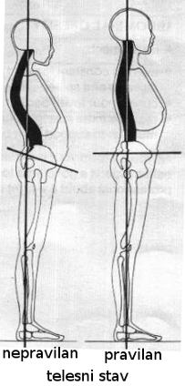

Na rođenju, naša kičma je onakva kakvu su nam dali roditelji; sa 40 imamo kičmu kakvu smo zaslužili.Donald Norfolk, vodeći britanski osteopata
Savremeni život se vrti oko sedenja: još od školskih dana provodimo sate pogrbljeni nad stolom, odnosno poslednjih decenija nad tastaturom kompjutera. Sedimo na poslu, a kao odmor sedimo pred televizorom ili opet pred kompjuterom npr. igrajući igrice. Ovaj način života dovodi do pojave tipičnih, čestih nepravilnosti u telesnom stavu. Kod nas žena to je dodatno pogoršano nošenjem visokih štikli, koje, ako nismo pažljivi, mogu u velikoj meri da poremete zdravu ravnotežu tela. Tako su tipična stanja pogrbljenost gornjeg dela tela ka napred i preterano isturanje karlice unazad, kao i opšta stegnutost, ne-elastičnost leđnih i ramenih mišića. Sve to vremenom dovodi do trajnijih poremećaja na kičmi i bolova.
Nastanak i karakteristike nepravilnog telesnog stava
 Kičma sa strane izgleda kao dupla S krivina: blaga krivina ka napred (lordosis) na vratnom i karličnom delu i blaga krivina unazad (kyphosis) na leđima i krstima. Promene u ovim krivinama menjaju težišnu liniju, tačku tela i obratno ako je težišna tačka iz nekog razloga pomerena to dovodi do izravnjivanja ili preteranog povećavanja ovih krivina, odnosno mogu nastati i krivine u stranu (scoliosis) koje remete relativnu simetriju tela.U praksi su najčešći već pomenuti pomeremećaj povećane krivine na leđnom delu, što je u vezi sa satima provedenim nad pisaćim stolom, kompjuterom i može nastati već u školskoj dobi. Leđni i rameni mišići (kao što su: erector spinae, trapezius i rhomboideus) su pod većim opterećenjem nego što je prirodno zbog ramena, ruke i glava nagnuti ka napred. Mišići su previše istegnuti, preopterećeni i na kraju oslabe (decompensatio). Tetive i ligamenti pokušavaju da nadoknade nedostatak mišićne snage i vremenom postaju kruti, u stalnom grču. Preterana krivina na leđnom delu utiče na povećanje krivina na svim delovima kičme, s jedne strane zbog održavanja statičke ravnoteže tela, a s druge: uzroci koji utiču na pojavu preterane leđne imaju negativni uticaj i na celu kičmu.
Prvobitno mesto nastanka deformiteta kičme može da bude i na karličnom delu, odnosno u oblasti krsne kosti. Kod žena neprestano nošenje visokih štikli trajno menja statiku tela, zbog čega nastaje preterana krivina u toj oblasti („isturena guza“), što opet za sobom povlači povećanje ostalih krivina kičme.
Uzrok nastanka lošeg telesnog stava mogu biti i hroničan umor, duševna trauma ili hronični bol (usled povrede ili degenerativne bolesti).
Ovaj sindrom lošeg telesnog stava karakterišu slab i preterano istegnuti leđni i trbušni mišići, kao i zgrčeni, ukrućeni mišići vrata, ramena, grudnog koša i karlice. Povijeni telesni stav smanjuje kapacitet pluća, s obzirom da ima manje mesta da se pluća rašire kod udisaja. Usled toga smanjuje se snabdevanje organizma kiseonikom što dovodi do lakšeg umaranja.Napetost u ramenom pojasu može dovesti do nastanka tzv. tenzionih glavobolja. Takođe ječest bol u leđima u visini lopatica ili krsne kosti.
Mogućnosti orijentalnog plesa u korekciji nepravilnog telesnog stava
Orijentalni ples može da pruži veliku pomoć u korekciji ovako nastalih nepravilnosti i umanjenju ili izbegavanju s tim povezanih tegoba. Razlog tome je što je pravilan telesni stav neposredno povezan sa statikom, funkcionisanjem i stanjem kičme, kao i sa radom mišića trupa, ramenog i karličnog pojasa. Istovremeno, upravo su to tzv. „radne zone“ orijentalnog plesa.
Evo nekoliko osnovnih pokreta orijentalnog plesa, koji su istovremeno i odlična vežba za pravilno držanje:
Izvođenje izolovanih i talasastih pokreta, koji čine osnovu orijentalnog plesa, omogućuje anatomska struktura kičme. Pokret duž cele kičme ustvari je zbir mnoštva malih pokreta između susednih pršljenova (usled elastičnosti hrskavice-diskusa između pršljanova). Tako je u izvesnoj meri moguće izolovano kretanje pojedinih segmenata, kao i postizanje široke skale raspona pokreta: od sasvim malog do pokreta velikog raspona. Variranje raspona takođe je značajna karakteristika orijentalnog plesa.
Pojedini pokreti ne samo da jačaju i povećavaju elastičnost mišića, već pomažu i da postanemo svesni njihovog stanja – zgrčenosti ili preterane istegnutosti. Variranjem pokreta iskusićemo zatezanje (fleksiju), istezanje (ekstenziju) i potpuno opuštanje mišića, kao i „uključivanje“ i „isključivanje“ pojedinih mišića iz toka pokreta.
Pored osnovnih pokreta veliki uticaj na telesni stav mogu imati i rekviziti, a posebno oni koji se balansiraju na glavi, kao što su tacne i svećnjaci, štap i sablja. Ples sa ovim rekvizitima zahteva da postanemo potpuno svesni položaja i težišne linije tela. Na taj način postajemo svesniji svog držanja i rada mišića u našem telu.
Orijentalni ples, kao i ples uopšte, ima veliku ulogu u ublažavanju stresa i duševne traume koji takođe mogu dovesti do pogurenog telesnog stava. Pokret, muzika i društvo (na grupnim časovima) ublažavaju svakodnevni stres i stvaraju dobro raspoloženje. Zajedno sa ovim opštim pozitivnim uticajem plesa, specifična tehnika orijentalnog plesa – koja podrazumeva male, skoro izolovane pokrete pojedinih mišića i grupa mišića – čini da ovaj ples bude posebno podoban za formiranje i uvežbavanje pravilnog telesnog stava, kao i za korekciju manjih nepravilnosti.
Ali orijentalni ples može da pruži pomoć i u rešavanju dubljih problema: osvešćivanje sopstvenog tela, prihvatanje samih sebe, slobodno izražavanje emocija kroz ples – sve ovo pomaže stvaranje unutrašnje ravnoteže. A ta unutrašnja ravnoteža odslikava se i na našem telu, u našem držanju.
Kakva su Vaša iskustva sa plesom? Imate li utisak da Vam se popravlja držanje od kada plešete? Ili Vam je najvažnija atmosfera i dobro raspoloženje? Imate li neka druga iskustva vezano za zdravlje i ples?
Napomene
Ovaj članak sam napisala na osnovu svog diplomskog rada „Orijentalni ples kao sportsko-rekreativna disciplina, sa posebnim osvrtom na mogućnosti korigovanja čestih nepravilnosti u telesnom stavu“ (Orijentális tánc mint a rekreáció szakága különös tekintettel a gyakori tartáshibák javításának lehetőségeire, Fitness Akadémia, Budapest 2007).
Za dalje informacije na ovu temu vam preporučujem:
- Donald Norfolk: Pobedite bol u leđima. Esotheria, Beograd 2010
- Shira: Healing Through Oriental Dance. (Suite101.com, 2000) – Scoliosis & Other Back Issues
- U knjizi Umetnost orijentalnog plesa poglavlje „Povoljni uticaji plesa na zdravlje“, kao i delove o tehnici i rekvizitima